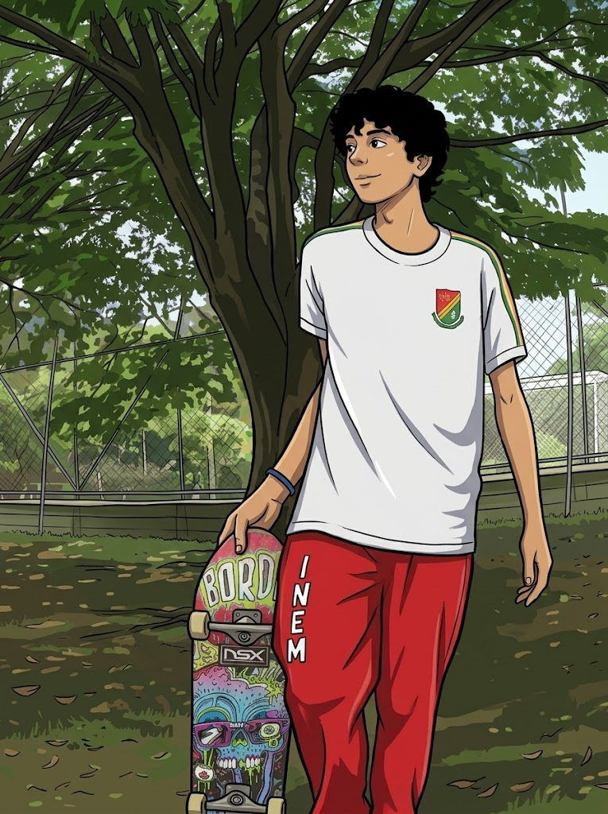

🖼️


No todo en mi vida son líneas de código, arquitecturas y diagramas. Fuera de la pantalla cultivo pasiones que me mantienen creativo, equilibrado y conectado con lo que realmente importa.
Explorar sabores del mundo, preparar platos gourmet y mezclar cócteles creativos —muy parecido a diseñar un buen sistema, pero comestible.
Recorrer caminos, descubrir lugares especiales y reconectar conmigo mismo mientras pedaleo.
Tocar guitarra y bajo es mi válvula de escape creativa. La música me enseña ritmo, constancia y armonía.
League of Legends (soy manco, pero feliz) y series anime como One Piece. Historias épicas y mundos complejos: pura inspiración.
La cristiandad y la lectura de las escrituras me ayudan a mantener valores claros, propósito y una perspectiva más profunda.
Paseos, juegos y caminatas largas son parte de mi rutina para mantener el equilibrio físico y mental.
Momentos compartidos con mi familia. El verdadero éxito se mide en relaciones sanas y tiempo bien vivido.
Después de un día intenso de código: salir a caminar, entrenar, jugar o simplemente respirar. El balance es clave.
"Un buen desarrollador sabe cuándo desconectar. Un gran desarrollador tiene un compañero —humano o peludo— que se lo recuerda todos los días."